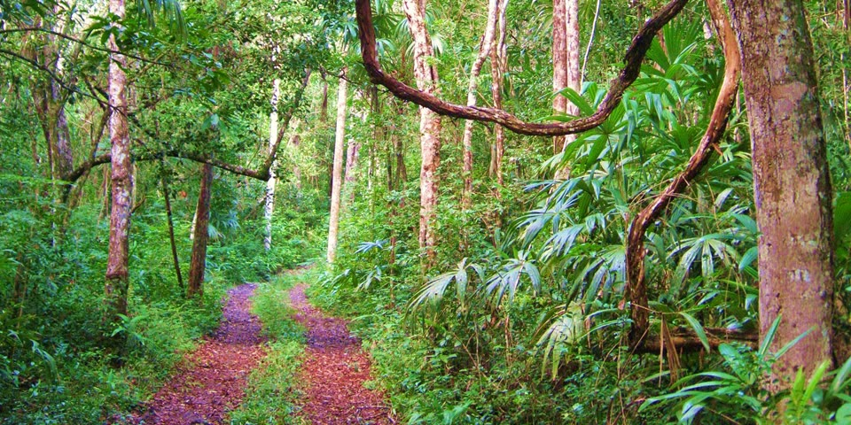
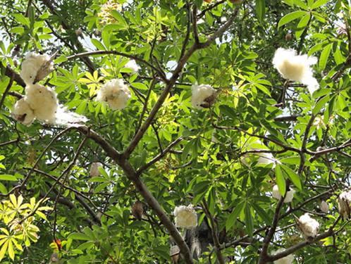
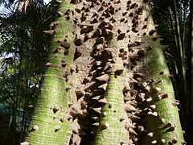
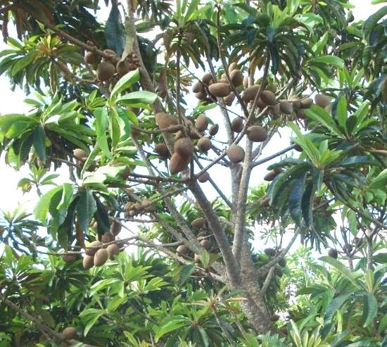
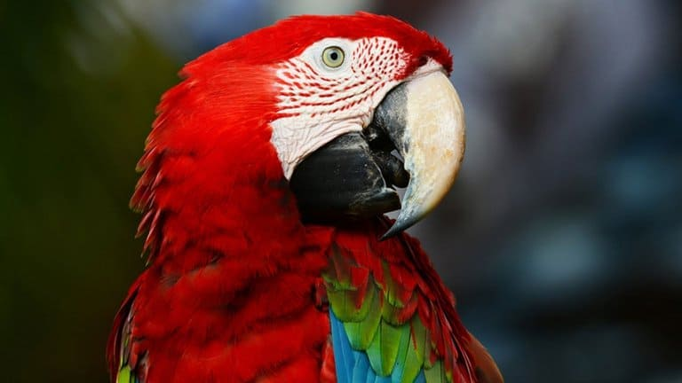
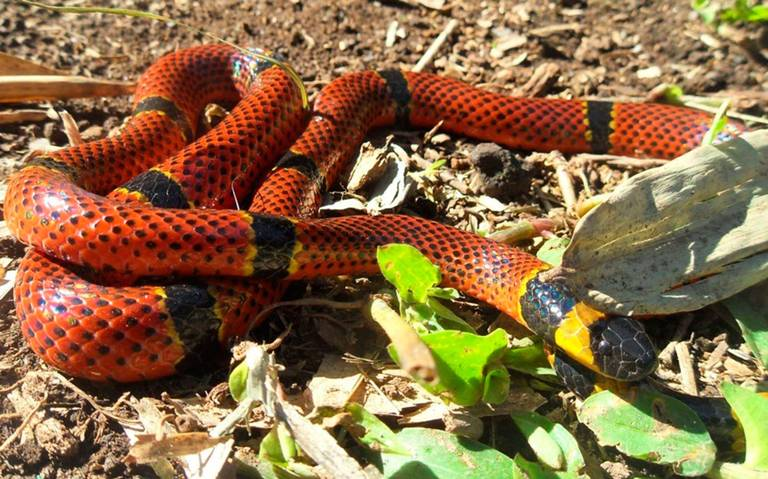
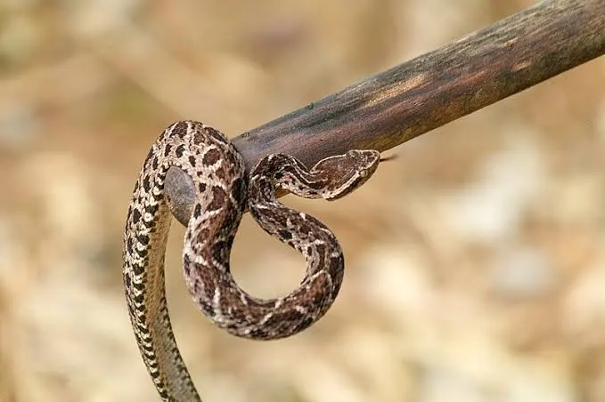

Selva Lacandona
La Selva Lacandona esta ubicada en el estado de Chiapas, Mexico. La region esta poblada por el pueblo maya lacandon, de ahi su nombre. La Selva Lacandona, es una region selva tropical humeda; la mas biodiversa del pais que alberga el 15% de la flora, el 33% de las especies de aves, 11% de anfibios y reptiles, el 25% de los mamiferos, el 40% de las mariposas diurnas y 13% de peces de agua dulce. Ademas, aqui se encuentran algunas de las ultimas poblaciones viables de especies emblematicas en peligro de extincion, como son el jaguar, el pecari de labios blancos, el tapir centroamericano, la guacamaya roja y la tortuga blanca. Esta región constituye una zona prioritaria de recarga de agua dulce, ya que se encuentra en la cuenca del río Usumacinta. La localizacion se comunica por medio de la carretera fronteriza a la ciudad de Palenque y de esta se desprenden ramales hacia los poblados.

La selva posee condiciones climaticas humedas, calidas y semicalidas, predominando el clima calido humedo con una temperatura media anual superior a los 22 °C, con baja oscilacion termica anual. Las lluvias alcanzan valores anuales superiores a los 1500 mm y pueden llegar hasta los 3000 mm en la zona norte. En los lugares de mayor altitud, se localiza el tipo climatico semicalido, el mas fresco de los calidos, con una temperatura media anual inferior a los 22 °C, sin descender de los 18 °C, con este tipo climatico se encuentra asociado el bosque de pino-encino.
Arbol de hasta 25 metros de altura, con el tronco recto de hasta 1.5 metros de diametro a la altura del pecho, presentando contrafuertes bien formados, la copa es frondosa, abierta en forma de abanico; Flores pequeñas de color verde amarillentas, florea de mayo a junio; los frutos son capsulas leñosas, ovoides de color moreno-rojizo de 12 a 18 cm. de largo y 8 cm. de ancho.
Puede crecer hasta 70 metros de altura y alcanzar un diametro de tres metros. Su generosa copa crece formando diversos “pisos” de ramas y hojas, y sus flores de carnosos petalos despiden un peculiar perfume. Tambien son notorias sus magnificas raices, que se encajan en el suelo caprichosamente, exhibiendo la potencia de su anclaje. En muchas comunidades, la ceiba es apreciada por sus cualidades medicinales. Tradicionalmente se utilizan la corteza, las hojas y tallos para curar heridas y tratar el acne, ademas de usarse para aliviar sintomas de reumatismo, enfermedades intestinales, inflamacion, dolor de muelas, quemaduras y salpullido. Pero sobre todas las cosas, se trata de un arbol sagrado.
|  |  |
El mamey es similar en apariencia a la magnolia; puede alcanzar más de 20 metros de altura en zonas tropicales; la copa es piramidal, de follaje denso, y el tronco (de fuste recto) esta cubierto por corteza aspera de color marron-grisaceo. Ramillas con latex amarillento. Las hojas son gruesas y de textura coriacea, con el haz de color verde oscuro y el enves mas palido. Son opuestas, simples, de forma eliptica; alcanzan de 15 a 25 cm de longitud y 5 a 10 cm de ancho. Como en el magnolio, estan orientadas hacia arriba. Las flores son muy vistosas y fragantes, de color blanco; aparecen solitarias o en racimos de dos o tres unidades. Miden 2 a 2,5 cm de diametro. El arbol puede ser dioico o hermafrodita indistintamente.

Es un arbol perennifolio, de un gran porte, de 25 a 35 m de altura con un diametro de hasta 1.25 m. Hojas dispuestas en espiral, aglomeradas en las puntas de las ramas, simples, elípticas a oblongas, margen entero. Tronco recto, acanalado en la parte inferior. Corteza profundamente fisurada, formando piezas más o menos rectangulares, con un abundante exudado lechoso blanco y pegajoso, muy amarga y astringente. Flores solitarias axilares, a veces aglomeradas en las puntas de las ramas, dulcemente perfumadas; sepalos pardo verdosos, corola tubular de color blanco. Fruto tipo baya de 5 a 10 cm de diametro, cascara cafe y aspera, pulpa carnosa y jugosa, muy dulce.

Importante pulmon del planeta, esta area natural es el hogar de más de 70 especies de mamiferos y más de 300 de aves. Entre los animales mas destacados que podemos mencionar de esta region están 70 especies de mamiferos; el jaguar (Panthera onca), el ocelote (Felis pardalis), el mono sarahuato (Alouatta palliata) y el mono araña (Ateles geoffroyi). Tambien habitan 306 especies de aves; la guacamaya roja (Ara macao), el tucán real (Ramphastus sulfuratus) y el de collar (Pteroglosssus torquatus) y una gran cantidad de reptiles, como la nauyaca, la boa constrictor y las coralillo, ademas de anfibios e insectos. La fauna de la Lacandona es rica en especies endemicas de Chiapas.
| MAMIFEROS | |
 |
 |
| AVES | ||
 |
 |
 |
| REPTILES | ||
|  |  |
 |